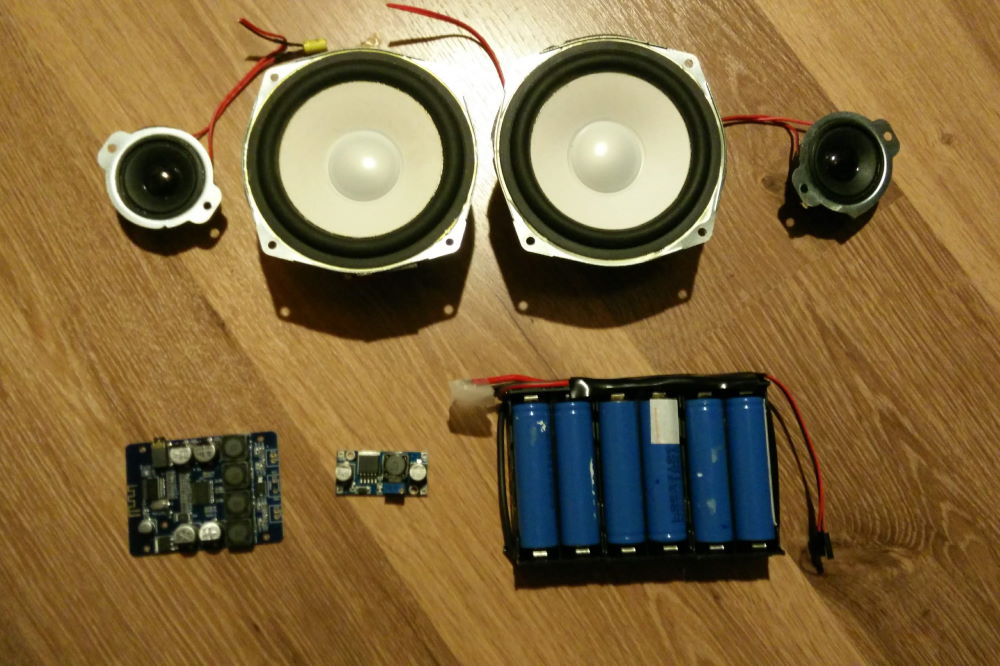

_Portable Speaker
Aug 2019 (Ongoing)
Because of my passion for music it felt like a fun challenge to build a cheap but powerful portable Bluetooth speaker. The speaker consists of a compact 2x20W amplifier from AliExpress, some second hand bookshelf speakers and a battery pack made from some Li-Ion batteries I salvaged from a broken laptop.
This project isn't finished yet as I still need to make an enclosure for it.
